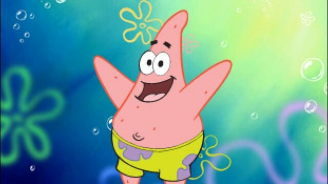

SpongeBob SquarePants
BOB ESPONJA

SpongeBob SquarePants ou Bob Esponja Calça Quadrada é um personagem fictício e protagonista da série animada estadunidense homônima.
O personagem é dublado em inglês pelo comediante Tom Kenny desde sua estreia juntamente com a série em 1 de maio de 1999.
PATRICK

Patrick Estrela é um personagem fictício da série de televisão americana SpongeBob SquarePants.
Ele é dublado pelo ator Bill Fagerbakke e foi criado e projetado pelo biólogo marinho e cartunista Stephen Hillenburg.
Ele apareceu pela primeira vez no episódio piloto da série "Help Wanted" em 1 de maio de 1999.